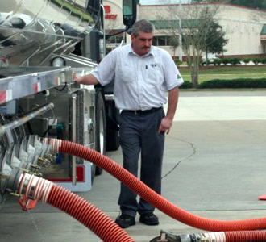

Thank you for your interest in the exciting career opportunities available here at Florida Rock & Tank Lines. We are always seeking professional, reliable drivers to join our team. Please read our Driver Qualifications before you complete an online application. At Florida Rock & Tank Lines we understand that our employees are our greatest asset and we are proud to offer excellent benefits including:
Driver Eligibility Requirements
- Must be at least 23 years old.
- A minimum of 1 year experience driving a tractor-trailer within the last three years. Driving school certificates are not required but will be reviewed if submitted with your application.
- Possession of a valid commercial driver’s license with the appropriate endorsements as required and issued by the resident state of the driver.
- No record of a driver's license suspension or revocation as a result of traffic violations for more than 30 days during the three year period prior to the date of hire. Suspensions for Failure to Appear, failure to meet financial responsibility laws, Medical Examination Certificate Expiration or Non-Moving Violation Convictions are excluded.
- No record of conviction for the violations listed below in any motor vehicle during the three year period prior to the date of hire, excluding the first item listed below.
- Driving while under the influence of alcohol or drugs in previous 10 years
- Refusal to take a test required by an implied consent of similar law
- Reckless homicide or involuntary manslaughter
- Operating while under suspension or revocation
- Leaving the scene of an accident
- Speed exhibition, contest, or drag race
- Use of a motor vehicle in the commission of a felony
- Assault with a motor vehicle
- Reckless driving
- Fleeing or eluding a police officer
- Speeding in excess of 25 mph of the posted speed limit
- No record of convictions in any motor vehicle exceeding two motor moving violations during the three year period prior to the date of hire.
- Meet all requirements as outlined in the Department of Transportation, CFR 49, Part 391.1 (a).
- No more than one at-fault accident and one moving violation conviction in the last three years.


(Click link or image to view video)